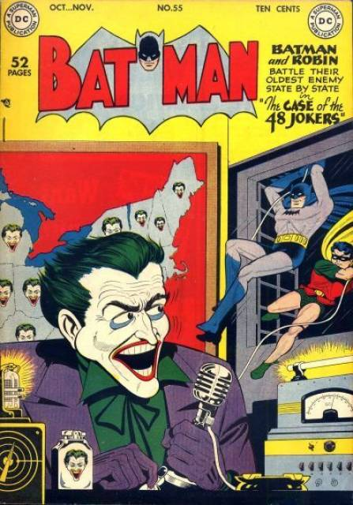

para anunciar futuros feitos criminosos
Why so serious? O questionamento macabro do vilão do Batman nunca fez tanto sentido, afinal, a nova linha de minisséries do selo DC Black Label traz histórias fora da cronologia da editora, e concede ampla liberdade aos quadrinistas. A última edição públicada pela selo da DC em 25 de agosto de 2020 é a explicação dos três Coringas, no entanto, para entedermos melhor essa história devemos entender de onde surgiu essa informação. A revista Justice League #50 compõe o desenvolvimento incial do arco "Darkseid War", onde Batman toma posse do Trono Mobius e seu ilimitado banco de dados de conhecimento. Batman pede para o Trono revelar qual é a verdadeira identidade do Coringa e a resposta o deixa chocado. Batman então revela que a resposta dada a ele é: "Existem três". Em vez de resolver o único grande mistério da sua carreira de super-herói, a cadeira só tornou o mistério muito mais complicado. Como visto em sua aparição em DC Universe Rebirth #1, Batman está trabalhando duro para dar sentido a esses três Coringas, mas não está conseguindo muito progresso.Com base no teaser da WonderCon e da arte do quadrinho Rebirth, parece que os três Coringas correspondem a diferentes fases da carreira do Príncipe Palhaço do Crime.
A existência de múltiplos Coringas certamente explicaria muito sobre o vilão, inclusive por que ele parece que sempre engana a morte e por que os poucos detalhes revelados sobre o seu passado são sempre tão vagos e contraditórios. Isto também poderia explicar por que sua personalidade mudou tanto ao longo dos anos. Talvez um dos Coringas se contente em ser um brincalhão bobo, enquanto os outros são mais sangue-frio e violentos.
É válido notar que o escritor Grant Morrison apresentou sua própria explicação para a personalidade em constante evolução do Coringa em seu trabalho com os quadrinhos Batman. Morrison acredita que o vilão tem uma condição chamada "super-sanidade", que faz com que a sua mente periodicamente mude para uma nova personalidade.
É evidente que esta revelação é apenas o começo de um enredo muito maior sobre o Coringa, que está por vir. A questão é onde e quando essa história vai se desenrolar. Com Johns abandonando a criação para os quadrinhos e Snyder se mudando para All-Star Batman, provavelmente o novo escritor, Tom King, vai ser o único a explorar o mistério dos três Coringas.
A crueldade e a loucura do Coringa sempre andaram juntas, ele não tira o sorriso do rosto nem quando está matando alguém à sangue frio. E sua risada ficou ainda mais acentuada quando sua vítima era ninguém menos que Jason Todd, o Robin que sucedeu Dick Grayson.
Na HQ Morte em Família, o Coringa escapa mais uma vez do asilo Arkham. No encalço dele estão Batman e Robin, que procuram a mãe do Garoto-Prodígio. Quando Todd encontra sua mãe, descobre que ela está trabalhando com o Coringa.
Com um pé de cabra, Coringa espanca violentamente Robin, amarra sua mãe e coloca uma bomba no local. Sem conseguir chegar a tempo, Batman encontra seu parceiro morto. A cena toda é bem pesada e entrou para história como uma das maiores crueldades do vilão.
Esta é a primeira versão do personagem e a única que tem uma origem realmente detalhada. Nascido na Era de Ouro dos quadrinhos, em 1940, o vilão era um serial killer com um senso de humor um tanto controverso. Ele estreia nos gibis anunciando pelo rádio que vai roubar diamantes e cometer alguns assassinatos, algo que ele faz pouco depois. O Coringa continua a matar pessoas pelas edições posteriores, além de transformar o rosto das vítimas no seu sorriso ou fazer máscaras com a pele delas.
|
 |
| Batman nº1 de 1940 |
HQ do Mestre do Crime |
| Primeira aparição do Coringa | O Mestre do Crime utilizando as mídias para anunciar futuros feitos criminosos |
|
Um comediante mal sucedido a beira do abismo da loucura, o desejo do Coringa era provar a todos que o homem mais sã podia se tornar o mais louco. Nesse prestigiado romance gráfico Barman: The Killing Joke, o Coringa foge do sanatório Arkham e atira na filha do comissário Gordon, Bárbara Gordon, conhecida como batgirl, deixando-a paralítica, com a única e maligna intenção de enlouquecer James Gordon.
|
Desenvolvido por Rossano Alves Lima Júnior - 2020